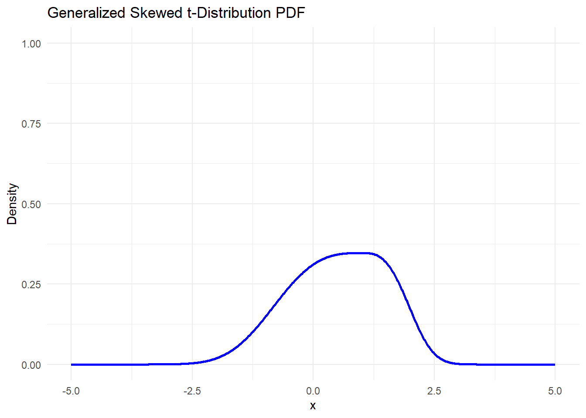
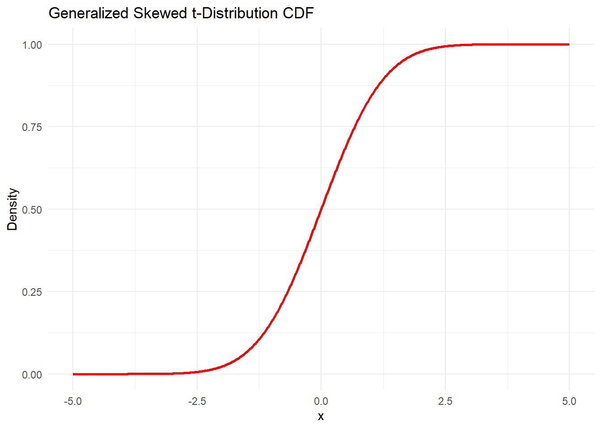

dsgt(x, mu = 0, sigma = 1, lambda = 0, p = 2, q = Inf, mean.cent = TRUE, var.adj = TRUE, log = FALSE)Skewed Generalized T Distribution and Skewed T Distribution
Statistics
Some notes on the skewed (generalized) T distribution.
NoteTLDR
To avoid doing duplicated work, here are my notes on the skewed \(t\) distribution, skewed generalized \(t\) distribution, R packages that implement them, and their different notations for expressing the closed-form expression of pdfs.
What is a “skewed generalization t distribution”?
According to (Hansen, McDonald, and Newey 2010), the skewed generalized t distribution (SGT) is a flexible distribution that involve a small number of distributional parameters and permit modeling a wider range of data characteristics.1
1 … than Gaussian, Laplace, student t and many other common distributions
SGT was first obtained by (Theodossiou 1998). Theodossious defined the PDF as follows:
\[ f(x| k, n, \lambda, \sigma^2) = \begin{cases} f_1 = C(1+(k/(n-2))\theta^{-k} \times (1-\lambda)^{-k} | x / \sigma|^k)^{-(n+1)/k} \text{ for } x < 0 \\ f_2 = C(1+(k/(n-2))\theta^{-k} \times (1+\lambda)^{-k} | x / \sigma|^k)^{-(n+1)/k} \text{ for } x \geq 0 \end{cases} \]
where \(k, n, \lambda, \sigma^2\) are scaling parameters and \(C\) and \(\theta\) are normalizing constants ensure that \(f(\cdot)\) is a proper p.d.f. and \(\sigma^2\) is the variance of the random variable \(x\). Note that \(k > 0, n > 2\) and \(-1 < \lambda < 1\). The parameters \(k\) and \(n\) control the height and tails of the density. The skewness parameter \(\lambda\) controls the rate of descent of the density around \(x = 0\).
The normalizing constants, \(C\) and \(\theta\), are defined as follows:
\[ C = 0.5 k B(\frac{1}{k}, \frac{n}{k})^{-3/2} \times B(\frac{3}{k}, \frac{n-2}{k})^{1/2} \, S(\lambda) \, \sigma^{-1} \] \[ \theta = (\frac{k}{n-2})^{1/k} B(\frac{1}{k}, \frac{n}{k})^{1/2} \times B(\frac{3}{k}, \frac{n-2}{k})^{-1/2} S(\lambda)^{-1} \] \[ S(\lambda) = (1 + 3 \lambda^2 - 4 \lambda^2 B(\frac{2}{k}, \frac{n-1}{k})^2 \times B(\frac{1}{k}, \frac{n}{k})^{-1} B(\frac{3}{k}, \frac{n-2}{k})^{-1})^{1/2} \]
where \(B(\cdot)\) is the Beta function.
(Hansen, McDonald, and Newey 2010) simplified the above formula and defined the pdf of SGT as follows:2 \[ f_{\text{SGT}}(y; m, \lambda, \phi, p, q) = \frac{p}{2\phi q^{1/p}B(1/p, q) \times \left(1 + \frac{|y-m|^p}{(1 + \lambda \text{sign}(y-m))^pq\phi^p}\right)^{q+1/p}} \] where \(B(\cdot, \cdot)\) is the beta function, \(m\) is the mode of \(y\), and the parameters \(p\) and \(q\) control the height and tails of the density. The parameter \(\phi\) is a scale parameter and \(\lambda\) determines the degree of skewness with the area to the left of the mode equal to \(\frac{1 - \lambda}{2}\).
2 The authors had a typo in their papers; I counted an odd number of parentheses …
- Setting \(\lambda = 0\) in the SGT yields the generalized t (GT) distribution.
- Setting \(p = 2\) yields the skewed t (ST) distribution.
- Setting \(\lambda = 0\) yields student t distribution
- Setting \(pq = 1\) yields the skewed Cauchy distribution
The above paper didn’t do any R packages. However, there is a sgt package on CRAN.3.
3 … with source here As to why it’s called “skewed generalized t distribution tree”, I have no idea. Why 🌳??? I’m guessing that this is a reference to Figure 1 in (Hansen, McDonald, and Newey 2010), but the “tree” term in the title threw me off …
In the corresponding vignette, the authors provided the following definition of the SGT pdf:
\[ f_{\text{SGT}}(x; \mu, \sigma, \lambda, p, q) = \frac{p}{2v\sigma q^{1/p}B(\frac{1}{p}, q) \left( \frac{|x - \mu + m|^p}{ q(v\sigma)^p(\lambda \text{sign}(x-\mu+m) + 1)^p + 1} \right)^{1/p + q}} \] where \[m = \frac{2v\sigma \lambda q^{1/p} B(2/p, q - 1/p)}{ B(1/p, q) }\] and \[v = q^{-1/p} \left[(3\lambda^2 + 1)\left(\frac{B(3/p, q -2 / p)}{B(1/p, q)}\right) - 4\lambda^2\left(\frac{B(2/p, q-1/p)}{B(1/p, q)}\right)^2 \right]^{-1/2}\]
The \(\lambda\) parameter controls the skewness of the distribution. \(p\) and \(q\) control the kurtosis of the distribution (\(p\) controls the height and \(q\) controls the tails). As \(p\) and \(q\) get smaller, the kurtosis increases.
The actual probability density function, dsgt, looks like this:
It is worth explaining what the two flags, mean.cent and var.adj, control. If mean.cent is FALSE, then \(\mu\) is the mode of the distribution, and \(m = 0\). All the \(x - \mu + m\) in the pdf would thus just become \(x - \mu\). Otherwise, if mean.cent is TRUE, which is the default case, then \(m\) is essentially a centering adjustment.
If var.adj is TRUE, which is the default case, then \(\sigma\) is scaled such that \(\sigma^2\) is the variance of the distribution. This is achieved by using \(v\).
For my own purpose, I should specify mean.cent = FALSE, which would make mu the mode, and the area under the curve would be calculated as (1 - lambda)/2.
Skewed t distribution
When I was first experimenting with the project, I found this other package, sn.4 The main focus of this package was on the skewed normal distribution, but they nevertheless included calculations for skewed t as well.
4 … source here. This was published in 2023, which is later than sgt (published in ~2013).
It was only later that I realized that skewed t is NOT equivalent to skewed generalized t. I tried to understand better what the function parameters meant by reading some of the papers referenced in the manuals.
NoteSome multi-variate skewed t
I found this paper referenced in the manual of sn — (Azzalini and Capitanio 2003).5 The authors provided mathematical notations that has a cleaner mapping to the R functions in sn. The skewed \(t\) distribution is defined as the one corresponding to the transformation \[Y = \xi + V^{-1/2} Z\] where \(Z\) has density function … with \(\xi = 0\) and \(V \sim \chi_\nu^2 / \nu\), independent of \(Z\). The density of \(Y\) is thus defined as \[f_Y(y) = 2 t_d(y; \nu) T_1\left( \alpha^T \omega^{-1} (y - \xi) \left(\frac{\nu + d}{Q_y + \nu}\right)^{1/2}; \nu + d \right)\]
Maybe this way of parameterizing is related to the Fernandez and Steel [1998] approach? See this StackExchange answer.
5 … the focus here is more on the multi-variate version of skewed \(t\)
Without delving too much into the multi-variate distribution, I arrived at the conclusion that this is the pdf I need for my own purpose:
\[ f_{\text{SGT}}(x; \phi, \omega, \alpha, \nu) = \frac{2}{\omega} \cdot f_t\left( z , \nu \right) \cdot F_t\left(\alpha \cdot z \cdot \sqrt{\frac{\nu + 1}{\nu + z^2}}, \nu+1\right) \] where \(\displaystyle z \equiv \frac{x-\xi}{\omega}\), \(f_t(\cdot, \nu)\) is the probability density function of the student \(t\) distribution with degree of freedom \(\nu\), \(F_t(\cdot, \nu+1)\) is the cumulative density function of the student \(t\) distribution with degree of freedom \(\nu + 1\), and \(\phi, \omega, \alpha, \nu\) are parameters for location, scale, skewness and skedasticity (i.e., heavy-tailed-ness) respectively.
I then implemented random data generation using javascript and the jstat library, but then I keep getting weird bumps in the data, so here I am, going through the expression again to make sure that my implementation in javascript tracks the results in R, and specifically, the functionality in sgt.
To conclude, the way that the parameters map to each other is as follows:
- mean: \(\mu\) (
sgtvignette) - scale: \(\phi\) (Theodossiou 1998), \(\sigma\) (
sgtvignette), \(\omega\) (Azzalini and Capitanio 2003) - skewness: \(\lambda\), \(alpha\)
- skedasticity6: \(p, q\), \(\nu\)
6 i.e., heavy-tailedness
Plotting SGT with R
For the sgt package, when we don’t provide any values, the default paramter values are mu = 0, sigma = 1, lambda = 0, p = 2, q = Inf. These parameters in general need to have the following restrictions (to prevent generating NaN data):
\[ \{(\sigma, \lambda, p, q): \sigma > 0, -1 < \lambda < 1, p > 0, q > 0 \} \]
library(sgt)
x_values <- seq(-5, 5, by = 0.01)
cdf_values <- psgt(x_values)pdf_values <- dsgt(x_values, mu = 1, sigma = 1, lambda = -0.3, p = 3, q = 100, mean.cent = FALSE)
# Create a data frame for plotting
plot_data <- data.frame(x = x_values, density = pdf_values)
# Create the plot
ggplot(plot_data, aes(x = x, y = density)) +
geom_line(color = "blue", linewidth = 1) +
labs(title = "Generalized Skewed t-Distribution PDF",
x = "x",
y = "Density") +
theme_minimal() +
ylim(0, 1) + xlim(-5, 5)
# Create a data frame for plotting
plot_data <- data.frame(x = x_values, density = cdf_values)
# Create the plot
ggplot(plot_data, aes(x = x, y = density)) +
geom_line(color = "red", linewidth = 1) +
labs(title = "Generalized Skewed t-Distribution CDF",
x = "x",
y = "Density") +
theme_minimal()
Implementing things in javascript
There are several libraries related to implementing things in javascript. The minimum requirement is to have 1) a Beta function and 2) an incomplete beta function.
References
Azzalini, Adelchi, and Antonella Capitanio. 2003. “Distributions Generated by Perturbation of Symmetry with Emphasis on a Multivariate Skew $t$ Distribution.” Journal of the Royal Statistical Society Series B: Statistical Methodology 65 (2): 367–89. https://doi.org/10.1111/1467-9868.00391.
Hansen, Christian, James B. McDonald, and Whitney K. Newey. 2010. “Instrumental Variables Estimation With Flexible Distributions.” Journal of Business & Economic Statistics 28 (1): 13–25. https://doi.org/10.1198/jbes.2009.06161.
Theodossiou, Panayiotis. 1998. “Financial Data and the Skewed Generalized T Distribution.” Management Science 44 (12): 1650–61. https://www.jstor.org/stable/2634700.